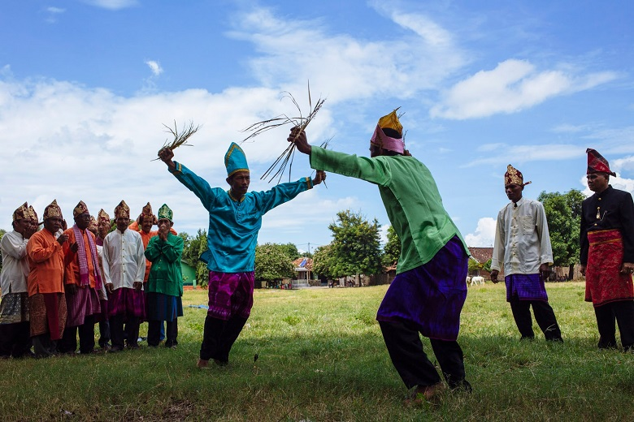
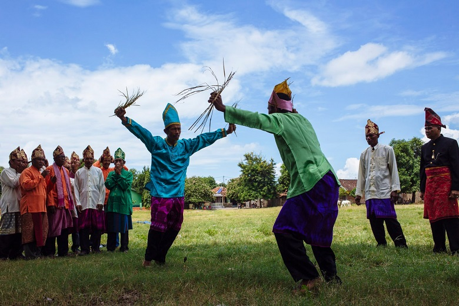
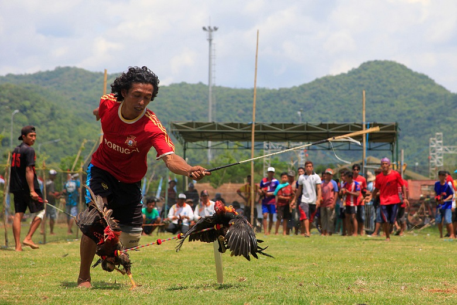

Barempuk ini adalah permainan Rakyat yang diadakan untuk menyambut musim panen padi. Barempuk adalah semacam permainan pertarungan antara dua pria dewasa dengan properti senjata berupa Rise Straw alias Batang Padi alias Jerami. Mereka akan saling menumbangkan dan menggosokkan jerami ke tubuh lawan. Kebayang dong gimana sakit sekaligus gatalnya. Yang kalah jelas yang paling sedikit berhasil menyentuh lawan atau yang tumbang duluan. Permainan ini di adakan di areal persawahan yang baru selesai panen.

Konon permainan ini sudah ada sejak tahun 70an dan konon lagi permainan ini berawal dari sebuah desa di Kecamatan Utan yang bernama Desa Pukat. Sebuah desa yang pada zaman dahulu merupakan bagian dari lautan. Terbukti dengan
ditemukannya Sebuah Jangkar Raksasa yang terbuat dari Kayu berumur ratusan Tahun dan hingga saat ini masih kokoh dan bisa dilihat di pelataran Masjid Desa Pukat.
Back to Barapan Ayam, Jadi semakin hari Barapan Ayam semakin dikenal dan menjadi Permainan atau event di hampir semua wilayah Sumbawa bagian tengah hingga barat. Bahkan saat ini lebih sering diadakan di Taliwang ibu Kota Kabupaten
Sumbawa Barat dengan event yang meriah dan bertabur hadiah-hadiah yang menggoda.


Kalau di Lombok ada Perisaian maka di Sumbawa ada Karachi. Sekilas memang sama tetapi secara teknis dan properti sangat berbeda. Jika Perisaian menggunakan Pemukul berupa Rotan kecil yang cetarrr dengan perisai tipis, di sumbawa menggunakan pemukul yang lebih besar ukurannya dengan perisai yang lebih tebal dan besar disebut Mangkar. Kostum Karaci dibuat tebal agar peserta tidak terlalu kesakitan dan wasitnya memegang gala dari bambu untuk melerai. Karaci adalah pertarungan dua pria, biasanya diadakan dalam event-event terntu saja misalnya acara Kesultanan, Event pemerintah dan semacamnya. Permainan ini kalau menurut mimin tidak cocok untuk ditonton anak-anak di bawah umur. Cocok untuk yang menyukai permainan-permainan extreme dan menantang adrenalin.